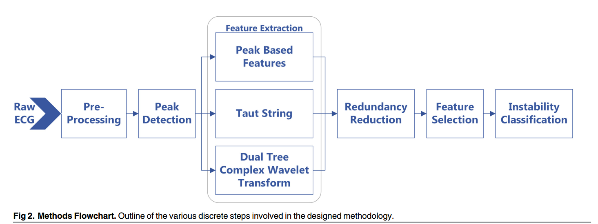
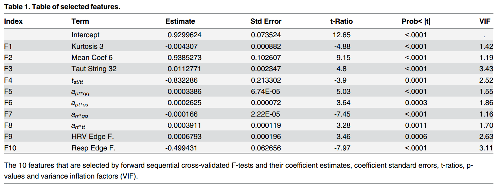
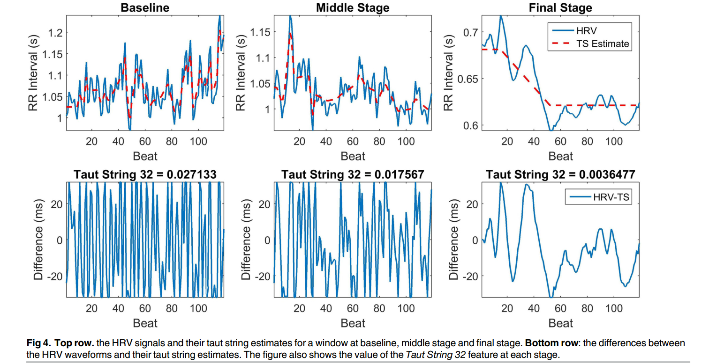
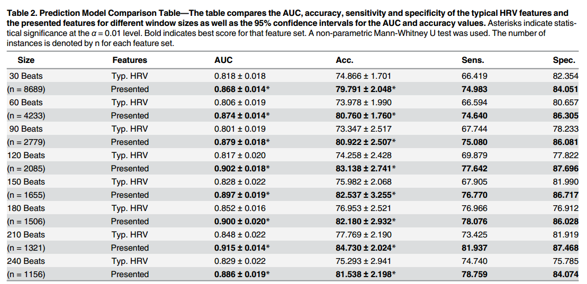
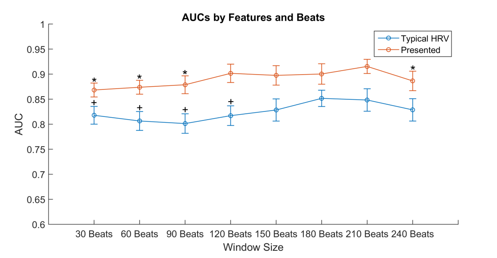
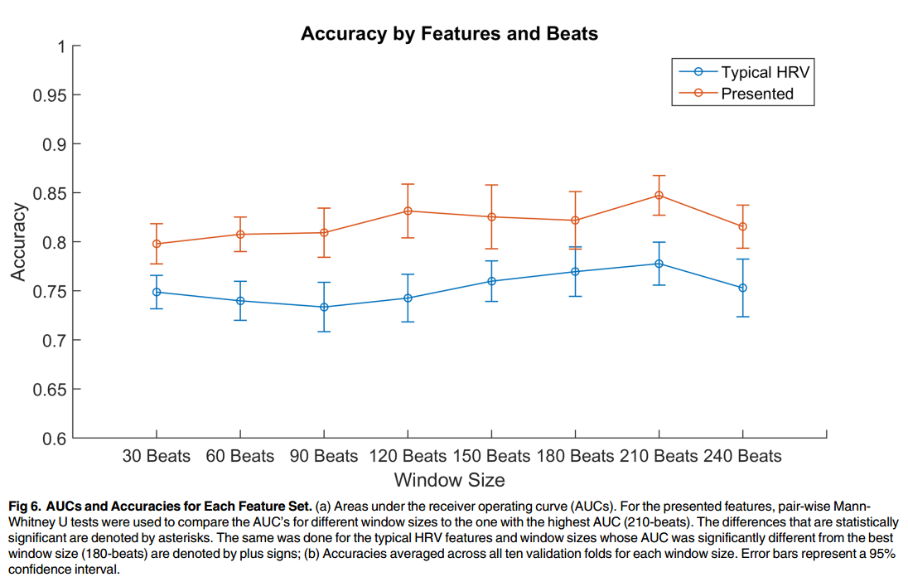
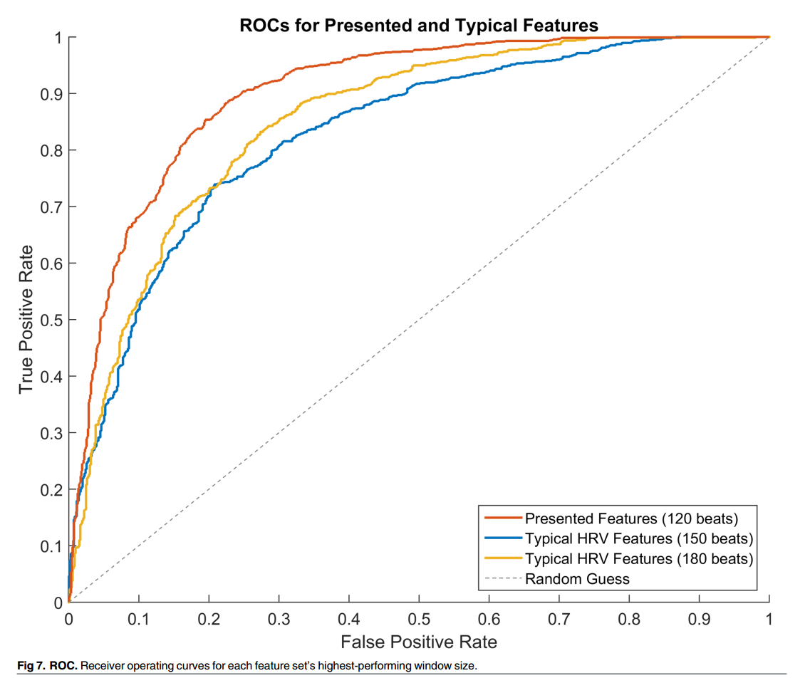
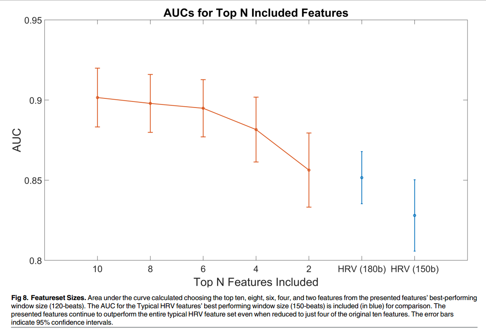

A Signal Processing Approach for Detection of Hemodynamic Instability before Decompensation
在呼吸困难前检测血液动力学不稳定问题
Clément édite à 25.9.2016
摘要
现在的问题主要是没有高保真的方式和连续监测器能够早期检测血液动力学的不稳定性。新系统能够检测的指标有心率变化（HRV）和心电图（ECG）。使用了SVM来预测血液动力学是否稳定。
介绍
测量血液动力指标的传统方法有：动脉血压（BP），心律（HR），动脉血氧饱和度（SaO2）。这些指标一般能够保持稳定直到出现明显的状况。所以这些指标无法提供早期介入预防的相关信息。 人体内具有补偿功能来维持正常范围的生命迹象指标。当补偿机制出现崩溃的时候，往往意味着疾病已经非常严重。 因而，高保真（hifi）的设备来监测血液动力的情况才能够提早介入预防。
数据
采用的是特殊的数据库，采用的是高保真物理信号，包含500Hz的ECG信号样本。使用的是志愿者下体负压(LBNP)数据。该LBNP模型作为人类补偿出血模型而建立。!!!(?) 数据由USAISR独自采集，去识别版本的数据库被提供给密歇根大学。 数据集包含200个数据源(200个人的数据)，每一个采集数据的志愿者都是健康的并且在24小时受到运动、酒精、咖啡因和其他非处方药的节制下获得的，从而避免了偏差。
下体负压试验
下半身在下体负压的试验舱里，上半身则露在外面并且接上多种传感器来监测连续的物理信号。试验开始5分钟静置在实验舱中，每过5分钟分别减压15,30,45,60mmHg，接着每5分钟增加10mmHg，直到100mmHg。附近的研究者检测血流动力学代谢失调开始的情况，包括急速地心脏收缩血压下降并伴随着晕厥症状，例如：心动过缓、灰视、管状视力、发汗、恶心或是头晕。该研究用的LBNP模型提供了一个检测血容量补偿机制以及设计早期警报系统的平台。 最终分析是用了178个样本。
在LBNP试验期间，HR的范围是60-100BPM，BP的范围是80-120mmHg。 将试验人群分组，并且记录人数，56人达到4级负压(60mmHg),55人达到5级负压(70mmHg),47人达到6级负压(80mmHg),16人达到7级负压(90mmHg),4人达到8级负压(100mmHg)。 !!!-->负压的意义以及级别划分?
人与人之间的差异还是具有很大的范围，在忍耐和补偿能力上，非常少的的人能够在LBNP测试中达到100mmHg的负压。 基于此，在基础系统中用一个简单的规则通过传统的生命信号来识别出血严重程度，不是一个有效的机制来在早期监测血液动力呼吸困难。 ++未来的挑战在于找到基础的生命信号，但不在真实生活中具有实用性。++ 明显的是，BP和HR在LBNP试验中都没有明显地改变，尽管经历了严酷的阶段。
方法
流程图

预处理
第一步：开窗口。 每个窗口包含120个完整的心跳心电图数据。每个窗口的心电图信号能够拟合为6阶多项式函数，系数优化通过最小化平方根和，并且减去ECG信号从基准线的漂移。 第二部：去除噪声。 使用Savitzky-Golay滤波器，它的系数由无权值的线性最小二乘回归和二阶多项式模型决定。 滤波后的信号将用来峰值检测。
峰值检测
预处理之后，检测P,Q,R,S和T峰。ECG窗口用level-10的波形变换和多贝西变换为4个小波基。 排除非常低频的噪声(++可能是消除心电图信号影响++)，保持信号的形状并且保证位置和形状的 包装完备。 滤过波的信号之后被用来查找R峰。SQRS特征波形使用++PhysioNet++的工具包来处理。 ECG信号在特征提取前做归一化处理，通过减去信号中值并且通过R峰的幅值来平均划分。 如果固定长度，一些提取特征将会依靠HR。但是我们的目的是让提取的特征不依赖HR信息。所以我们的处理方法是固定一定数量的心跳值而不是固定时间。 在这篇文章中，我们选择的窗口包含120个心跳数据。
特征提取
基于峰值的特征。 基于信号峰归一化的时间间隔进行峰值第一级别的特征提取。 和 定义为在第 窗格的P,Q,R,S,T峰时间。 特征被定义为：
表示间隔长度，表示第i个R-R峰间隔 **注意：**所有的时间间隔都是通过其他间隔，归一化来避免HR的影响。 第二级别的特征提取 (基于形态学的特征) 是用峰值幅值来计算的。 用，幅值特征和计算方法如下：
特征集还包括幅值特征比率和幅值特征交互，定义如下：
++注意：a表示的是幅值，t表示的时间，注意区分符号。++ 此外，从心率变化(HRV)信号提取一些非典型特征。包括从HRV信号傅里叶变换和功率谱密度(PSD)提取特征，如主频率和它的幅值，中值频率和边缘频率。 最后，呼吸信号也可以从ECG调制信号提取，能提取的呼吸特征除了上述的特征还包含伸展量以及呼吸信号边缘频率的导数。 总计839个特征从基于波峰独自计算方式提取出来。
紧绷弦
R峰作为最明显的特征量，RR间隔能提供很多信息，定义如下式子：
其中，D是差异算子并且 对于固定的 让x定义为唯一的方程：
和
定义一阶二元范数:
可看做x的二阶导数，可以衡量方程x的弯曲程度。 方程x可以通过紧绷弦理论来计算，,图像如下所示。
计算有一个有效算法，时间复杂度为O(n)。 x比z更平滑而且是一个分段的线性方程。令y=z-x，则z=x+y就可以看做是一个去噪，x是去除噪声的信号，y就是噪声信号 且表示的是噪声等级。 计算,其中，。 通过不同epsilon绷紧弦计算，提取到64个特征，这些都是统计特征值，像平均值，标准差，偏度，峰态。
通过这样的数学方式处理，可以将离散的数据结合起来，方便后续的处理，以及提取更多的特征。但这是一种估计的方法，必然会存在估计误差，但是这些可以通过取值来控制。因而是一种比较实用的处理方法。
双树复小波分解
单纯的时间域或是频率域对于建立动态模型是不足够的。因而将信号变换到混合时间和频率域能够提高目标和提取显著特征的数量。 一个流行地这样的变换，通常用来捕捉信号并在时间和频率域特征化的方法是短时傅里叶变换(STFT)。 然而，STFT取决于窗口的形状和尺寸，并且在变换中对信号质量和效率都产生很大的影响。而且，STFT在时间-频率上的精度没有优化。 为了解决这个问题，另一个流行的方法是离散波形变换(DWT)，基于一系列分析的波，每一个有自己的持续时间、时间定位和频率带，能够将ECG信号分解一系列系数，这些系数能够代表ECG时间段和频率带的度量。 但是DWT的缺点是：计算效率低，稀疏表示；奇点提取、信号建模、方差偏移容易混乱，容易混淆而且缺少方向性。因而不采用DWT的方式。 为了解决传统方法的缺点，采用双树复小波分解(DTCWT)。两个非复数的小波分解同时用在各自的分解级别上。第一个DWT表示实部的变换，第二个DWT表示虚部的变换。在DTCWT框架内表示分解的两个流，用两个典型的滤波器。在标准小波方法中出现的边界问题或称为方差偏移，在DTCWT中都可以缓和。DTCWT接近于转换不变量，能够提供信号的量级和相位信息。 使用DTCWT，每个ECG窗口被分解成5个级别，每个级别包含波形的实部和虚部。总共，从5个级别分解的实部和虚部提取出198个特征。这些特征像形态学一样是统计学变量。通过特征选择步骤，只有两个特征被发现是独立的并且信息量大的，能够用在完备的预测模型。
传统HRV特征
传统的特征用来与这篇文章描述的新的特征集比较和对照有效性，用在评估血液动力状态。从时间域提取的特征有RR间隔方差平方根(SDNN)又称为NN间隔，定义为：
是RR间隔，是RR间隔在一个窗口中的平均值。SDNN反应的是在一个记录周期的变化性所有的循环变量。 RR间隔的一阶微分的标准偏差(SDSD)，计算如下：
其中，是u的平均值。SDSD在数量上表示了HRV短期的变化性。 另一个类似于SDSD的测量值是连续偏差均方根(RMSSD),计算如下：
另一个提取的特征是pNN50，代表R-R间期与平均R-R间期大于50ms的个数占总数的百分比，定义如下：
另一些从HRV提取的特征有功率谱密度(PSD),使用基于周期图的FFT方法，类似于用流行的Kubios HRV分析工具。使用计算过的PSD，低频带(LF,0.004-0.15Hz)功率和高频带(HF,0.15-0.4Hz)功率被提取出来。HF/LF功率比同样能够计算出来作为一个增加的特征。其他提取的特征有均值、峰态以及每个HRV窗口的偏度。
特征选取
通过每个ECG信号窗口计算和提取，得到1117个不同的特征。然而，为了简洁，通过特征选取过程的特征才保留，减少那些冗余和信息量对于机器学习不够大的特征。 机器学习理想的特征集应该与输出高度相关，但是集合内部数据不具备相关性。我们采用两个阶段的特征提取。第一个阶段，通过冗余减少算法从大的特征集中减少多重共线性特征。第二个阶段，逐步筛选方法,能够按照之前的方式精确地减少特征量。
相关特征减少冗余
多重共线性或高相关性会导致问题，即回归系数估计将变得不确定(即行列式值为0)。为了减少特征间的相关性，我们使用一种相关矩阵的方法。 对于特征集的每一个数据源(即提取的一个人的数据)，相关矩阵为 元素表示关于数据源s的特征。 接着计算平均相关矩阵C的值(可能是行列式的值?)，代表着所有特征关于所有的数据源的平均相关。这个矩阵就作为一个阈值，高过这个矩阵相关性的就被视为冗余。冗余特征被计数并且采用贪心算法来消除冗余特征，采用的顺序是依据冗余度多少来优先消除冗余特征。然后重新更新特征数据集，直到没有特征的冗余量超过给定的阈值级别。 两个特征相关性大于等于0.9被视为多重共线性的指示器。在这篇文章中采用0.9这个阈值量，从而减少了392个特征，剩下一共725个特征。
模型选择
第二步也是最后一步用来减少特征的方法是精细地模型选择。选择一个具有最高精度和最低冗余的特征子集，这是一个非线性问题。在这篇文章中，采用的是连续F测试(sequential F-tests)来选择一个最小特征子集，好处是与响应变量高度相关，但是相互之间关联很小。采用的是一个10层折叠、智能主题、交叉验证的向前选择方法。 从一个只包含截距的空模型开始，在每一步最大化加入数据集模型的R次幂。选择排名前10的特征用于后续的机器学习。
机器学习
试验的机器学习方法有：判别式分析，最邻近算法，决策树以及支持向量机(SVM)。SVM效果最好，因而此篇论文将介绍SVM方法。 178个数据源平均具有12个特征窗口，包含120个心跳数据。特征集，对于所有数据源交叉联合，具有总计2085行、10列。我们发现采用LIBSVM实现的SVM标准线性核表现最好。采用10层折叠，交叉验证对于多个不同的C值来优化代价参数C，接着选择一个C使得模型对于所有交叠平均值区域最大程度在ROC(AUC)曲线下面(ROC和AUC曲线要看！！！)。 如果跑在整个数据集里，将会有过拟合的风险，所以还是采用外部的10层折叠交叉验证的方式。验证集首先拿出来并放置在一边。剩下的数据按照之前的交叉验证优化参数被分为训练和测试集，选择最合适的C。接着一个新的模型被训练出来，在联合训练和测试集上使用选择的C来演化验证，产生如AUC、精确度、敏感度、特异性等矩阵。这个步骤一直重复下去，并将每一验证层的矩阵平均来产生最终的矩阵。 尽管数据源包含大量LBNP阶段，我们分为两级描述来提供更多个体特征分解信息。在LBNP个体的进程中，分解为两半。一半，个体被认为充分的补偿。另一半，个体被认为明显的代谢失调。在这种情况下，识别个人仍然优先考虑任何生命信号明显变化的情况，潜在地允许早期识别和介入。 使用LBNP的级别来给机器学习机贴标签，对于每个数据源所有的LBNP级别被均分为两部分。一半LBNP阶段包含在标准线上被贴标签到正常类，另一半是从中间到最后级别的数据被认为是不正常类(包含一类出现血液动力学危害的测试者)。这样一个策略仍然允许识别病人通过明显的经典生命迹象(HR和BR)看出是否受到伤害。 在这篇研究中，恢复阶段被排除在外。 为了进行比较，传统的HRV特征以及描述的新的特征被分开适用不同的模型，来比较他们的结果。
结果
 列举的特征相关系数有估计值、标准差、统计系数与标准误差比率(t-ratios)、假定值(p-values)以及方差膨胀因子(VIF)。VIF值都小于10，说明各项之间的关系可以忽略不计。
第一个特征是ECG信号DTCWT分解第三级别剩余的信号的峰态。峰态是分布离群值倾向的一个度量。正态分布的峰态是3.分布的离群值倾向比正态分布大则峰态大于等于3，小则峰态小于3。 第二个特征是DTCWT5级分解后剩余波形的均值。 第三个特征是在epsilon为32ms时绷紧弦分段线性波形重构与原始HRV波形差值的均值。差集(HRV和绷紧弦估计的差值)排除了HRV波形的趋势，只保留了HRV小于或等于32ms幅值的变化。绷紧弦32特征通过计算偏差导数的绝对值均值捕获变化等级。 
此外，还选择了基于峰值的7个特征。 第四个特征S-T段通过T-T段标准化比率。 第五到第八个特征是幅值交互作用产生的特征。 第九个特征是HRV边缘频率，第十个特征是呼吸边缘频率，都是基于95%信号功率密度谱计算的边缘频率。
 利用10个典型的HRV特征去构建一个线性回归模型，两种模型预测的严重级别和事实上的严重级别画在图5中。
用0表示基础线，1表示失败来定义严重级别。从0到0.8定义5个严重级别，并将LBNP状态分配到这些级别中。绿线表示的是理想模型。蓝色线是提出的特征，更接近于理想模型，分类更好。两种模型置信区间在统计学上分开的比较明显除了在0.4这一级别。因为0.4这一级别主要受截距的影响。因而，在两种极端分类情况下，0.4这一级别可认为相等。
为了证明两种模型从不同长度ECG信号中都能捕获合适的信息，利用窗口大小从30心跳到240心跳，并且增量为30来提取特征集。数据集中最低HR基础是50BPM。接着按照之前的说法为每一个窗口尺寸和特征集选择一个SVM模型。
利用10个典型的HRV特征去构建一个线性回归模型，两种模型预测的严重级别和事实上的严重级别画在图5中。
用0表示基础线，1表示失败来定义严重级别。从0到0.8定义5个严重级别，并将LBNP状态分配到这些级别中。绿线表示的是理想模型。蓝色线是提出的特征，更接近于理想模型，分类更好。两种模型置信区间在统计学上分开的比较明显除了在0.4这一级别。因为0.4这一级别主要受截距的影响。因而，在两种极端分类情况下，0.4这一级别可认为相等。
为了证明两种模型从不同长度ECG信号中都能捕获合适的信息，利用窗口大小从30心跳到240心跳，并且增量为30来提取特征集。数据集中最低HR基础是50BPM。接着按照之前的说法为每一个窗口尺寸和特征集选择一个SVM模型。
 表2提供了在ROC(AOC)曲线下面区域，对于每个窗口尺寸和特征集精确度、敏感度、特异性的数据。非参数化的Mann-Whitney U测试(???)被用来检测提出的特征与传统的HRV特征比较统计意义。 对于所有的窗口大小，在AUC和精确度上面提出的特征胜过传统的HRV特征。此外，在AUC结果上，新特征(120心跳的窗口)好过传统HRV特征(180心跳的窗口)0.05，精确度上是5.37%。
  图6采用的置信区间是95%。新的特征表现的比传统的HRV特征更好。峰值都出现在210心跳窗口下。*号表示的是通过成对Mann-Whitney U测试在该窗口下平均AUC的值与210心跳窗口出现明显的不同。采用的特征在120心跳窗口与最大值没什么不同，所以还是选择120心跳窗口，能够减少计算需求。
 图7展示了120心跳窗口的新特征以及150、180心跳窗口传统特征的ROC曲线。
 图8采用了前10、8、6、4、2特征来计算AUC的值。即使提出的特征集2个特征的表现也好过传统的HRV特征，而4个特征就明显比较好。另一方面，也说明10个特征的表现最好。
讨论
这篇研究中，通过LBNP实验二分类算法来度量严重程度，采用的新的特征提取以及机器学习方法，比传统的HRV度量表现更好。一个显著的方面是发现在最终的模型中，算法的表现不需要病人数据的基础知识以及准确对病人进行分类。在120心跳窗口的AUC和精确度都不需要考虑试验者LBNP试验经历了什么。因为在许多疾病或创伤情况下，如出血，研究人员没有机会去知道一个受害者生命信号或是去采集。最佳的方式是生理学数据在任何时间点都可采集，因而开发一套连续自动生理学数据监测系统可能是提供唯一的以及强大的方法来监测病人，只有这样才能有机会在早期分辨血液动力学不稳定的开端，而不是在传统的生命迹象上发现显著的不正常变化。
这篇文章也有一些明显的局限性，包括试验者在LBNP过程中并没有经历真正的伤害和痛苦。真正的创伤出血，必然伴随着组织伤害和痛苦。在这项研究中ECG信号提取必须考虑考虑这些因素以及它们的影响。为了提取的数据集而设计的ECG特征和机器学习算法能否用在其他的疾病状态像败血症还并不清楚，但基于之前的HRV研究，我们的方法看起来有意义。
总之，相比于基于传统的生命迹象或现在的基于HRV监测器在短周期时间内分类决策方面，该工具体现了优势。提出的系统将能够实现ECG信号的高保真分析并能够为多层次照料提供准备，从医院之前设置(救护车运输的同时)，到ICU、护理间甚至到家庭环境(具备能够实现的可便携的ECG检测仪)。
问题交流
下体负压测试的意义，相关这样的数据采集实验。 作者提出局限性情况下下体负压测试与真实病人数据的一些关联。 关于physiobank数据的情况，是怎样的一种数据。
论文的优点
符合一般论文的写作模式，可以作为写作论文的参考。 除了一般采集的数据进行研究，本文作者采用了下体负压试验来获取数据，比较新颖。